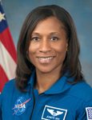

Lyndon B. Johnson Space Center
Houston, Texas 77058
|
National Aeronautics and Space Administration Lyndon B. Johnson Space Center Houston, Texas 77058 |
 |
Biographical Data |
||
Jeanette J. Epps (Ph.D.)
NASA Astronaut
PERSONAL DATA: Born in Syracuse, New York. Enjoys traveling, reading, running, mentoring, scuba diving and family.
EDUCATION: Graduated from Thomas J. Corcoran High School, Syracuse, New York in 1988; received a bachelor of science degree in Physics from LeMoyne College in 1992 and master of science degree and doctorate of philosophy degree in Aerospace Engineering from the University of Maryland in 1994 and 2000, respectively.
ORGANIZATIONS: AIAA, Member of the Society for Science & the Public
SPECIAL HONORS/AWARDS: NASA GSRP Fellowship 1996-1997, 1997 1998 and 1998-1999; Exceptional Performance Award 2003, 2004 and 2008; inducted into the University of Maryland, Department of Aerospace Engineering, Academy of Distinguished Alumni 2012
EXPERIENCE: a NASA Fellow during graduate school, Dr. Epps authored several highly referenced journal and conference articles describing her research. Her graduate research involved extensive testing of composite swept-tip beams, comparative analysis of analytical models and experimental data for shape memory alloys and the application of shape memory alloy actuators for tracking helicopter rotor blades. After completing graduate school, Dr. Epps spent more than 2 years working at Ford Motor Company as a Technical Specialist in the Scientific Research Laboratory. Before leaving Ford, she completed proof-of-concept work on using magnetostrictive actuators to reduce vibrations that enter a vehicle via the suspension control arms, which resulted in a provisional patent. Also while at Ford, Dr. Epps participated in research involving automobile collision location detection and countermeasure systems, which resulted in the granting of a U.S. Patent. In 2002, Dr. Epps joined the Central Intelligence Agency (CIA) where she spent more than 7 years working as a Technical Intelligence Officer. She received multiple performance rewards for her work at the CIA.
NASA EXPERIENCE: Dr. Epps was selected in July 2009 as 1 of 14 members of the 20th NASA astronaut class. She recently graduated from Astronaut Candidate Training that included scientific and technical briefings, intensive instruction in International Space Station systems, Extravehicular Activity (EVA), robotics, physiological training, T-38 flight training and water and wilderness survival training.
MAY 2012